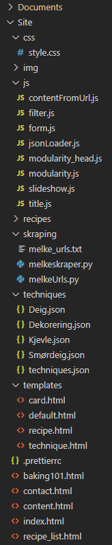
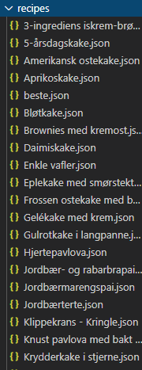
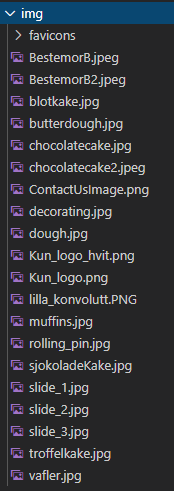
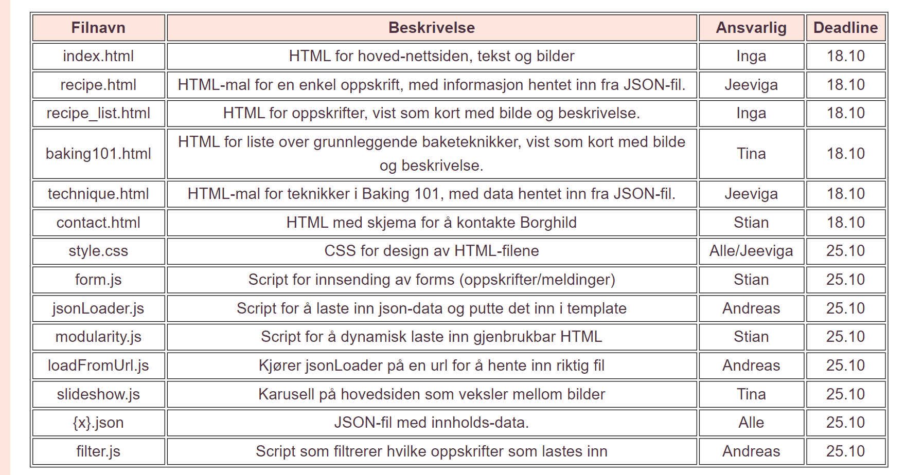

- Klient: Bestemor Borghild
- Kontaktperson: Fiktiv
- Type selskap: Fiktiv personlig bakeblogg
- Sidenavn: Bestemor Borghilds Bakebonanza
Link til websiden
Endringer i CSS
En vesentlig endring som har skjedd i forhold til det som er
spesifisert i designdokumentet er endringer av fast definerte
størrelser. For de ulike elementene, som størrelser på tekst, er det
tatt utgangspunkt i det definerte og mockupsene. Det er så justert
med responsivt design for å passe ulike skjermstørrelser (enten med
ulike fastsatte størrelser, eller med justering etter
skjermstørrelse med eventuell max/min-verdi).
-
Eksempelvis har hovedtittelen (h1) maks-størrelse 56 px som
definert i P2, en minimumsstørrelse på 24 px, og varierer med 7 vw
mellom disse, mens h3 er lagt til for under-underoverskrifter med
16 px generelt og 18 px for større sider for å skilles bedre fra
vanlig tekst.
-
I tillegg varierer h2 mellom 20 og 40 px (40 px definert i P2),
mens generell tekst er justert litt ned til 14 px for mindre
skjermer, og 16 px ellers (P2).
-
Istedenfor en body with på 960 px er innholdet i stor grad satt
med en margin på 10% for responsivitet, alt ettersom hva som har
egnet seg for det spesifikke innholdet.
Dette inkluderer endring av plasseringer på bilder (flyttes under
tekst istedenfor ved siden av, i tillegg til at selve
bildestørrelsen justeres), og at navbaren (som egentlig blir på
toppen av siden mens man scroller nedover) forsvinner (blir ikke med
mens man scroller) på mindre skjermer da navbaren brukte for mye av
den tilgjengelige plassen for små skjermer. Footer justeres fra en
33/67 inndeling (som i P2) til en 50/50 når skjermen blir mindre for
mer hensiktsmessig plassbruk.
Andre endringer ble vurdert implementert som følge av responsivitet
for små skjermer. En endring som (eksempelvis) ble vurdert
implementert som følge av responsivitet var en drop-down meny
(hamburgermeny) for navbaren (med javascript). Da dette ikke var
spesifisert i designet, det strengt tatt fungerte uten pga. få
elementer i navbaren, og det allerede var lagt til flere nye
funksjoner, ble det besluttet å ikke prioritere å implementere dette
også i denne omgang. (Testene kan jo senere vise at dette var noe
mer vesentlig enn vi tenkte, og at vi da egentlig burde ha lagt det
til.)
Dette er også et resultat av at siden først og fremst ble designet
med tanke på en større skjerm. Det medførte at prinsippet om “mobile
first” ikke ble helt fulgt, og responsiviteten går noe begge veier.
Det skal ikke være av større problemer for det endelige utfallet,
men medfører blant annet at emulatoren i chrome kan fange opp
responsiviteten noe sent ved første innlasting.
- Endringer i forside - index.html:
-
Designet er gjort responsivt. Det er gjort en endring i hvordan
slideshow fungerer, se endringer i slideshow.js. I tillegg er
fargen på teksten endret til #FCE6DE og det er lagt til et overlay
for å dempe intensiteten i bildet for forbedret synlighet /
universell utforming.
- Endringer i oppskrifter - recipe_list.html:
-
Designet er gjort responsivt. Det lille ikonet ved siden av
knappene i designet er fjernet da det egentlig ikke hadde noen
hensikt eller funksjon utover det visuelle, og var mest
forvirrende. Fargene er endret for visning-knappene til å være
mørk hvis de er aktivert/“på” (de respektive oppskriftene vises)
og lys hvis de er deaktivert/”av”. “Brukernes oppskrifter” er ikke
aktivert / er gjemt ved innlasting av siden for raskere innlasting
og prioritering av Borghilds oppskrifter. En sorteringsknapp for
alfabetisk sortering er lagt til for henholdsvis “Borghilds
oppskrifter” og “Brukernes oppskrifter”, og er lagt til under på
samme måte som for baking101.html for likt/gjennomført design.
Denne er lagt til for at oppskriftene skal ha mulighet for en form
for sortering, da de lastes inn i tilfeldig rekkefølge.
- Endringer i spesifikk oppskrift - recipe.html:
-
Responsivt design, for små skjermer fyller bildet hele bredden, og
fremgangsmåte flyttes under ingredienser. Lagt til en kort tekst
om bakverket (samme som for tekst på cardsene), samtidig som det
ble holdt i en ren og enkel stil.
- Endringer i baketips - baking101.html:
-
Lagt til knapp for å sortere cardsene alfabetisk (a-å eller å-a),
slik som i recipe_html. I motsetning til visningsknappene endrer
ikke sorteringsknappene farge, da ingenting “skrus av eller på”.
Selv om det ble nevnt en vanskelighetsgrads-indikator på kortene
for baking101 på P2 dokumentet, så ble dette ikke implementert da
vanskelighetsgrad for teknikkene kan inkluderes i selve teksten og
hvis det inkluderes på kortet føler vi det ville blitt for mye
innhold på en liten overflate. I tillegg ga ikke
vanskelighetsgradsindikator nødvendigvis noen mening for alle de
ulike tipsene, og hadde kanskje vært mer aktuelt for oppskriftene.
- Endringer i baketeknikk - technique.html:
-
Få vesentlige endringer utenom responsivitet i form av størrelser
og at bildet/illustrasjon flyttes under tekst ved små skjermer.
Ekstra luft mellom overskrift og tekst er strengt tatt fjernet, av
estetiske grunner. Det var egentlig tenkt at det kunne være video
som alternativ (eller i tillegg til) bilde, men dette fant vi ut
var litt for mye å skulle inkludere med tanke på tidsbruk.
- Endringer i contact.html:
-
Kun gjort minimale endringer i form av responsivitet på siden,
samt lagt til validering i kontaktskjemaet.
- Ny HTML-fil content.html:
-
Det ble opprettet en ny fil, content.html, som blir brukt som en
“forelder” til innholds-sidene (recipe.html og technique.html).
Den inneholder bare en div som skal fylles med innhold fra en av
template-filene. Dette ble nok bare oversett under
planleggingsfasen, og dukket fort opp under utvikling.
- Endringer i forms.js:
-
Forms.js er ikke betydelig endret fra P2 forklaring. Det er en
liten endring fra P2 som gjør det mulig å ha to kontaktskjemaer,
ett som JS valideres og ett som er HTML5 validert hvis JS ikke
lastes. CSS endringer for å bruke JS versjonen av
innsendingsskjemaet gjøres når forms.js lastes (endre JS skjema
fra “display: none” som er satt i HTML, JS endrer HTML5 validert
skjema til “display: none”) .
- Endringer i modularity.js:
-
Det er ikke gjort noen nevneverdige endringer på modularity.js som
genererer footer og navigasjonsbar fra P2. Det ble lagt til en
funksjon i modularity.js som lager understrek for brukerens
nåværende side (basert på URL) og om brukeren holder over en annen
side. Funksjonalitet med understrek i navigasjonsbaren ble lagt
til i modularity.js da det er her navigasjonsbar lages og vi
trenger denne funksjonen på alle sider navigasjonsbaren finnes.
- Endringer i recipeFromUrl.js:
-
Omdøpt til contentFromUrl.js, da det ikke bare er recipe som skal
hentes inn, men også techniques
- Endringer i slideshow.js:
-
Link til bilde som vises i slideshow ble fjernet pga.
gjennomsiktige knapper for å bla i bildene, med gjennomsiktige
knapper tror vi at flere brukere hadde trykket feil og blitt
forvirret over å plutselig komme til en ny side.
- Ny JavaScript-fil, modularity_head.js:
-
For å minimere nødvendig tekst i head elementet på HTML sidene ble
det laget et nytt skript, modularity_head.js, som håndterer
definisjon av viewport, innlastning av brukt font (Poppins), og
innlastning av favicons (for ulike typer enheter). Dette har
fordeler, da man ikke trenger mye kode i head på de ulike HTML
sidene, men har også ulempe at de ikke lastet hvis brukerens
nettleser ikke støtter javascript. Selv om brukere uten javascript
dermed ikke laster viktige elementer, ble dette gjort siden
navigasjonsbaren (som er hvordan brukeren kommer seg rundt på
siden) også er avhengig av javascript, så brukere uten javascript
vil uansett få problemer med å benytte siden. I utgangspunktet så
ble CSS fil lastet inn via dette scriptet, men i dialog med
veileder ble det flyttet ut og manuelt lagt inn i head for hver
html fil.
- Ny JavaScript-fil, title.js:
-
Denne ble laget for å kunne gi relevant og passende tittel
(document.title) til de ulike spesifikke oppskrift-/teknikksidene
basert på URL. Det gjør det også mulig å se hvilken
oppskrift/teknikk man er inne på i fanen hvis man besøker andre
sider samtidig.
- Web scraper, melkeskraper.py og melkeUrls.py:
-
For å vise hvordan siden hadde sett ut med et stort antall
oppskrifter ble en python web-skraper laget for å raskt generere
en stor mengde brukbare .json filer. Oppskrifter hentet fra
tine.no med denne web-skraperen ble plassert som “innsendte
oppskrifter”, mens oppskrifter skrevet inn manuelt ble plassert
som “borghilds oppskrifter”.
Hvordan minstekrav er oppfylt
Minimumskravene ble løst på en noe annen måte enn beskrevet i P2,
basert på endringer som skjedde (flere funksjoner), og etterhvert
som noen begynte på ulike JavaScript-funksjoner og ble ferdig
fortere enn tenkt.
- Stian
-
Stian brukte javascript for å validere kontaktskjema (form) som
primærløsning for contact.html, med html5 validering hvis
javascript ikke er tilgjengelig for brukeren. Stian brukte også
javascript for å generere gjenbrukbar kode i head (favicon,
importere font, og definere viewport), navigasjonsbar (Tre
knapper/linker, logo med link til forside) og footer (Logo, noe
tekst, og link til contact.html) for alle sidene.
- Inga
-
Ingabrukte JavaScript til å satt en passende tittel
(document.title) til de ulike sidene for spesifikke
oppskrifter/teknikker som ellers ville fått samme tittel fra
content.html. Inga brukte også JavaScript sammen med Andreas for å
få sortering til å bli inkludert for de to oppskriftdelene i
recipe_list.html, basert på Andreas’ sortering for technique.html.
- Jeeviga
-
Jeeviga brukte JavaScript for å implementere slideshow, sammen med
Andreas.
- Andreas
-
Andreas brukte JavaScript for å implementere filtrering sammen med
Inga, og har i samarbeid med Jeeviga også implementert slideshow.
Andreas har også smått modifisert modularity og implementert alt
relatert til JSON-loading.
Modularitet
Modularitet ble implementert av Stian ved hjelp av javascript.
Modularitet i head ved å legge til flere genererte noder til et head
element in HTML filene med spesifikk id. Navigasjonsbar ble generert
ved å lage et nytt div element som plasseres først i body, med
icon/forside link helt til venstre og en sentrert div for de andre
sidene/linkene. Hver av de sentrerte elementene linker til relevant
side og bruker javascript for å lage strek under element ved
mouseover, nåværende side har også en understrek i navigasjonsbar
som genereres av javascript. Footer er laget ved å lage et nytt
footer element som legges bakerst i body, denne footeren inkluderer
logo, noe text, og en link til contact.html.
Her kan en se filstrukturen i prosjektet:



Endelig oppdeling av arbeid
Hvem som har arbeidet med hva
- Stian
-
Stian arbeidet med contact.html, modularity.js (og
modularity_head.js, se endringer vi har gjort), style.css (for det
relatert til footer og navbar), og lagde noen json filer. Han
gjorde også små endringer i index.html og linker til inkluderte
javascript så de fungerer uavhengig av filplassering (paths
relativt til root dir).
- Inga
-
Inga arbeidet med index.html, recipe_list.html og contact.html,
store deler av style.css (med unntak av det relatert til cards og
slideshow) i tillegg til småting i andre filer relatert til css
eller annen “fiksing” (som valideringsfeil eller feil i oppsett i
enkelte json-filer) der det var nødvendig. Hun lagde også
title.js, og arbeidet med deler av filter.js.
- Andreas
-
Andreas satte opp skjelettet for siden med alle html-filene, og
implementert innlasting av innhold fra json-filer. Han har også
samarbeidet om filter og slideshow med Inga og Jeeviga. Andreas
har i tillegg også jobbet med å fylle inn innhold i diverse
HTML-sider og tilhørende CSS der det har vært nødvendig, og
modifisert noe på modularity.js. Det var også Andreas som satte
opp webscraping i python og alt relatert til dette.
- Jeeviga
-
Jeeviga er hovedpersonen bak designet av mockups-ene fra P2 som er
brukt i kodingen, laget i Figma. I tillegg har hun arbeidet med
recipe.html, technique.html og småting i style.css.
Tabeller med arbeidsfordeling
For referanse er original arbeidsfordeling definert i i P2 vist
under:

Nedenfor kan vi se en tabell over filer med en kort beskrivelse av
filen og personen(e) som jobbet på filen.
Som nevnt i P2 så er {x}.JSON navngitt etter innholdet, og er her
mesteparten av innholdet ligger. Enhver oppskrift og baketeknikk er
lagret i en JSON-fil hvor innholdet er dataen som vises for
brukeren. Det kan for eksempel være "sjokoladekake.json", hvor
oppskriften da ligger i denne filen.
| Filnavn |
Beskrivelse |
Person(er) |
| index.html |
Forsiden for nettstedet. Inneholder et slideshow, litt tekst om
borghild, og et par utvalgte oppskrifter
|
Andreas, Inga, Jeeviga, Stian |
| recipe.html |
HTML-mal for en enkel oppskrift, med informasjon hentet inn fra
JSON-fil.
|
Andreas, Jeeviga |
| content.html |
Side som fungerer som “forelder” for filene som fungerer som
mal.
|
Andreas |
| recipe_list.html |
HTML for oppskrifter, vist som kort med bilde og beskrivelse.
|
Andreas, Inga |
| baking101.html |
HTML for liste over grunnleggende baketeknikker, vist som kort
med bilde og beskrivelse.
|
Andreas, Tina |
| technique.html |
HTML-mal for teknikker i Baking 101, med data hentet inn fra
JSON-fil.
|
Tina, Jeeviga, Andreas |
| contact.html |
HTML med skjema for å kontakte Borghild |
Stian, Inga |
| style.css |
CSS for design av HTML-filene |
Andreas, Inga, Jeeviga, Stian |
| form.js |
Script for innsending av forms (oppskrifter/meldinger) |
Stian |
| jsonLoader.js |
Script som oversetter template-tags “{{ name }}” med tilsvarende
innhold i en json-fil.
|
Andreas |
| modularity.js |
Et skript med to funksjoner. Funksjon 1 lager navigasjonsbar og
footer. Funksjon 2 legger til understrek på nåværende side og
mousehover side på navigasjonsbaren.
|
Stian, Andreas |
| modularity_head.js |
En javascript funksjon for å lage head-tags med innhold |
Stian |
| loadFromUrl.js |
Kjører jsonLoader på en url for å hente inn riktig fil |
Andreas |
| slideshow.js |
Karusell på hovedsiden som veksler mellom bilder |
Jeeviga, Andreas |
| {x}.json |
JSON-fil med innholds-data. |
Alle |
| filter.js |
Script som filtrerer hvilke oppskrifter som lastes inn |
Inga, Andreas |
| title.js |
Script som dynamisk setter title for de ulike oppskriftene som
lastet inn i content.html og erstatter unicode med lesbare
bokstaver.
|
Inga |